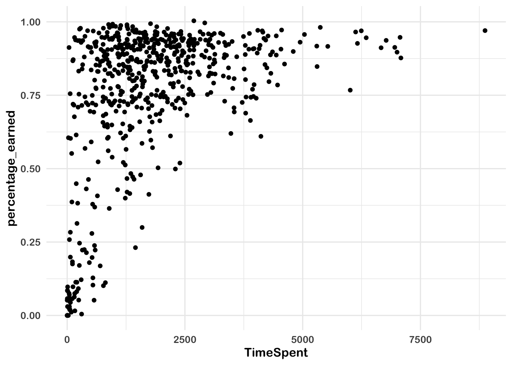

8 Education Dataset Analysis Pipeline: Walkthrough #1
8.1 Background and Purpose
In the 2015-2016 and 2016-2017 school years, researchers carried out a study on students’ motivation to learn in online science classes. The online science classes were part of a statewide online course provider designed to supplement(and not replace) students’ enrollment in their local school. For example, students may choose to enroll in an online physics class because one was not offered at their school (or they were not able to take it given their schedule).
The study involved a number of different data sources which were explored to understand students’ motivation:
- A self-report survey for three distinct but related aspects of students’ motivation
- Log-trace data, such as data output from the learning management system
- Discussion board data (not used in this walkthrough)
- Achievement-related (i.e., final grade) data
Our purpose for this walkthrough is to begin to understand what explains students’ performance in these online courses. To do so, we will focus on a variable that was available through the learning management system used for the courses, on he amount of time sudents’ spent on the course. We will also explore how different (science) subjects as well as being in a particular class may help to explain student performance.
First, these different data sources will be described in terms of how they were provided by the school.
8.1.1 Data Source #1: Self-report survey
This was data collected before the start of the course via self-report survey. The survey included 10 items, each corresponding to one of three measures, namely, for interest, utility value, and perceived competence:
- I think this course is an interesting subject. (Interest)
- What I am learning in this class is relevant to my life. (Utility value)
- I consider this topic to be one of my best subjects. (Perceived competence)
- I am not interested in this course. (Interest - reverse coded)
- I think I will like learning about this topic. (Interest)
- I think what we are studying in this course is useful for me to know. (Utility value)
- I don’t feel comfortable when it comes to answering questions in this area. (Perceived competence)
- I think this subject is interesting. (Interest)
- I find the content of this course to be personally meaningful. (Utility value)
- I’ve always wanted to learn more about this subject. (Interest)
8.1.2 Data source #2: Log-trace data
Log-trace data is data generated from our interactions with digital technologies, such as archived data from social media postings (see Chapter XXX and XXX). In education, an increasingly common source of log-trace data is that generated from interactions with learning management systems and other digital tools (Siemens and Baker 2012). The data for this walk-through is a summary of log-trace data, namely, the number of minutes students spent on the course. Thus, while this data is rich, you can imagine even more complex sources of log-trace data (i.e. timestamps associated with when students started and stopped accessing the course!).
8.1.4 Data source #4: Discussion board data
Discussion board data is both rich and unstructured, in that it is primarily in the form of written text. We collected discussion board data, too, and highlight this as a potentially very rich data source.
8.2 Processing the data
This analysis uses R packages, which are collections of R code that help users
code more efficiently, as you wil recall from Chapter INTRODUCTORY. We load
these packages with the function library. In particular, the packages we’ll
use will help us load Excel files, organize the structure of the data, work with
dates in the data, and navigate file directories.
library(readxl)
library(tidyverse)
library(lubridate)
library(here)
library(dataedu)
library(apaTables)
library(sjPlot)This code chunk loads the log trace data using the read_csv function. Note that we call read_csv three times, once for each of the three logtrace
datasets. We assign each of the datasets a name using <-.
# Gradebook and log-trace data for F15 and S16 semesters
s12_course_data <-
read_csv(here(
"data",
"online-science-motivation",
"raw",
"s12-course-data.csv"
))
# Pre-survey for the F15 and S16 semesters
s12_pre_survey <-
read_csv(here(
"data",
"online-science-motivation",
"raw",
"s12-pre-survey.csv"
))
# Log-trace data for F15 and S16 semesters - this is for time spent
s12_time_spent <-
read_csv(here(
"data",
"online-science-motivation",
"raw",
"s12-course-minutes.csv"
))8.3 Viewing the data
Now that we’ve successfully loaded all three logtrace datasets, we can visually inspect the data by typing the names that we assigned to each dataset.
## # A tibble: 1,102 x 16
## RespondentId StartDate CompletedDate LanguageCode opdata_CourseID
## <dbl> <chr> <chr> <chr> <chr>
## 1 426746 2015.08.… <NA> en FrScA-S116-01
## 2 426775 2015.08.… 2015.08.24 1… en BioA-S116-01
## 3 427483 2015.08.… <NA> en OcnA-S116-03
## 4 429883 2015.09.… 2015.09.02 1… en AnPhA-S116-01
## 5 430158 2015.09.… 2015.09.03 9… en AnPhA-S116-01
## 6 430161 2015.09.… 2015.09.03 9… en AnPhA-S116-02
## 7 430162 2015.09.… 2015.09.03 9… en AnPhA-T116-01
## 8 430167 2015.09.… 2015.09.03 9… en BioA-S116-01
## 9 430170 2015.09.… 2015.09.03 9… en BioA-T116-01
## 10 430172 2015.09.… 2015.09.03 9… en PhysA-S116-01
## # … with 1,092 more rows, and 11 more variables: opdata_username <chr>,
## # Q1MaincellgroupRow1 <dbl>, Q1MaincellgroupRow2 <dbl>,
## # Q1MaincellgroupRow3 <dbl>, Q1MaincellgroupRow4 <dbl>,
## # Q1MaincellgroupRow5 <dbl>, Q1MaincellgroupRow6 <dbl>,
## # Q1MaincellgroupRow7 <dbl>, Q1MaincellgroupRow8 <dbl>,
## # Q1MaincellgroupRow9 <dbl>, Q1MaincellgroupRow10 <dbl>## # A tibble: 29,711 x 16
## CourseSectionOr… Bb_UserPK EnrollmentStatus EnrollmentReason Gender
## <chr> <dbl> <chr> <chr> <chr>
## 1 AnPhA-S116-01 60186 Approved/Enroll… Course Unavaila… M
## 2 AnPhA-S116-01 60186 Approved/Enroll… Course Unavaila… M
## 3 AnPhA-S116-01 60186 Approved/Enroll… Course Unavaila… M
## 4 AnPhA-S116-01 60186 Approved/Enroll… Course Unavaila… M
## 5 AnPhA-S116-01 60186 Approved/Enroll… Course Unavaila… M
## 6 AnPhA-S116-01 60186 Approved/Enroll… Course Unavaila… M
## 7 AnPhA-S116-01 60186 Approved/Enroll… Course Unavaila… M
## 8 AnPhA-S116-01 60186 Approved/Enroll… Course Unavaila… M
## 9 AnPhA-S116-01 60186 Approved/Enroll… Course Unavaila… M
## 10 AnPhA-S116-01 60186 Approved/Enroll… Course Unavaila… M
## # … with 29,701 more rows, and 11 more variables: FinalGradeCEMS <dbl>,
## # Gradebook_Item <chr>, Item_Position <dbl>, Gradebook_Type <chr>,
## # Gradebook_Date <chr>, Grade_Category <chr>, Status <lgl>,
## # Points_Earned <chr>, Points_Attempted <dbl>, Points_Possible <dbl>,
## # last_access_date <time>## # A tibble: 598 x 6
## CourseID CourseSectionID CourseSectionOrigID Bb_UserPK CUPK TimeSpent
## <dbl> <dbl> <chr> <dbl> <dbl> <dbl>
## 1 27 17146 OcnA-S116-01 44638 190682 1383.
## 2 27 17146 OcnA-S116-01 54346 194259 1191.
## 3 27 17146 OcnA-S116-01 57981 196014 3343.
## 4 27 17146 OcnA-S116-01 66740 190463 965.
## 5 27 17146 OcnA-S116-01 67920 191593 4095.
## 6 27 17146 OcnA-S116-01 85355 190104 595.
## 7 27 17146 OcnA-S116-01 85644 190685 1632.
## 8 27 17146 OcnA-S116-01 86349 191713 1601.
## 9 27 17146 OcnA-S116-01 86460 191887 1891.
## 10 27 17146 OcnA-S116-01 87970 194256 3123.
## # … with 588 more rows8.4 Processing the pre-survey data
Often, survey data needs to be processed in order to be (most) useful. Here, we process the self-report items into three scales, for: interest, self-efficacy, and utility value. We do this by
- Renaming the question variables to something more managable
- Reversing the response scales on questions 4 and 7
- Categorizing each question into a measure
- Computing the mean of each measure
Let’s take these steps in order:
- Rename the question columns to something much simpler:
s12_pre_survey <-
s12_pre_survey %>%
# Rename the qustions something easier to work with because R is case sensitive
# and working with variable names in mix case is prone to error
rename(
q1 = Q1MaincellgroupRow1,
q2 = Q1MaincellgroupRow2,
q3 = Q1MaincellgroupRow3,
q4 = Q1MaincellgroupRow4,
q5 = Q1MaincellgroupRow5,
q6 = Q1MaincellgroupRow6,
q7 = Q1MaincellgroupRow7,
q8 = Q1MaincellgroupRow8,
q9 = Q1MaincellgroupRow9,
q10 = Q1MaincellgroupRow10
) %>%
# Convert all question responses to numeric
mutate_at(vars(q1:q10), list( ~ as.numeric(.)))Let’s take a moment to discuss the dplyr function mutate_at. mutate_at is a version of mutate, which changes the values in an existing column or creates new columns. It’s useful in education datasets because you’ll often need to transform your data before analyzing it. Try this example, where we create a new total_students column by adding the number of male students and female students:
# Dataset of students
df <- tibble(
male = 5,
female = 5
)
df %>% mutate(total_students = male + female)## # A tibble: 1 x 3
## male female total_students
## <dbl> <dbl> <dbl>
## 1 5 5 10mutate_at is a special version of mutate, which conveniently changes the values of multiple columns. In our dataset s_12_pre_survey, we let mutate know we want to change the variables q1 through q10. We do this with the argument vars(q1:q10)
- Next we’ll reverse the scale of the survey responses on questions 4 and 7 so the responses for all questions can be interpreted in the same way. Rather than write a lot of code once to reverse the scales for question 4 then writing it again to reverse the scales on question 7, we’ll build a function that does that job for us. Then we’ll use the same function for question 4 and question 7. This will result in much less code, plus it will make it easier for us to change in the future.
# This part of the code is where we write the function:
# Function for reversing scales
reverse_scale <- function(question) {
# Reverses the response scales for consistency
# Args:
# question: survey question
# Returns: a numeric converted response
# Note: even though 3 is not transformed, case_when expects a match for all
# possible conditions, so it's best practice to label each possible input
# and use TRUE ~ as the final statement returning NA for unexpected inputs
x <- case_when(
question == 1 ~ 5,
question == 2 ~ 4,
question == 4 ~ 2,
question == 5 ~ 1,
question == 3 ~ 3,
TRUE ~ NA_real_
)
x
}
# And here's where we use that function to reverse the scales
# Reverse scale for questions 4 and 7
s12_pre_survey <-
s12_pre_survey %>%
mutate(q4 = reverse_scale(q4),
q7 = reverse_scale(q7))- We’ll accomplish the last two steps in one chunk of code. First we’ll create a column called
measureand we’ll fill that column with one of three question categories:
int: interestuv: utility valuepc: self efficacy
After that we’ll find the mean response of each category using mean function.
# Add measure variable
s12_measure_mean <-
s12_pre_survey %>%
# Gather questions and responses
pivot_longer(cols = q1:q10,
names_to = "question",
values_to = "response") %>%
# Here's where we make the column of question categories
mutate(
measure = case_when(
question %in% c("q1", "q4", "q5", "q8", "q10") ~ "int",
question %in% c("q2", "q6", "q9") ~ "uv",
question %in% c("q3", "q7") ~ "pc",
TRUE ~ NA_character_
)
) %>%
group_by(measure) %>%
summarise(# Here's where we compute the mean of the responses
# Mean response for each measure
mean_response = mean(response, na.rm = TRUE),
# Percent of each measure that had NAs in the response field
percent_NA = mean(is.na(response)))
s12_measure_mean## # A tibble: 3 x 3
## measure mean_response percent_NA
## <chr> <dbl> <dbl>
## 1 int 4.26 0.171
## 2 pc 3.65 0.170
## 3 uv 3.76 0.170We will use a similar process later to calculate these variables’ correlations.
8.5 Processing the course data
We also can process the course data in order to create new variables which we can use in analyses. This led to pulling out the subject, semester, and section from the course ID; variables that we can use later on.
8.6 Joining the data
To join the course data and pre-survey data, we need to create similar keys. In other words, our goal here is to have one variable that matches across both datasets, so that we can merge the datasets on the basis of that variable.
For these data, both have variables for the course and the student, though they have different names in each. Our first goal will be to rename two variables in each of our datasets so that they will match. One variable will correspond to the course, and the other will correspond to the student. We are not changing anything in the data itself at this step - instead, we are just cleaning it up so that we can look at the data all in one place.
Let’s start with the pre-survey data. We will rename RespondentID and opdata_CourseID to be student_id and course_id, respectively.
s12_pre_survey <-
s12_pre_survey %>%
rename(student_id = RespondentId,
course_id = opdata_CourseID)
s12_pre_survey## # A tibble: 1,102 x 16
## student_id StartDate CompletedDate LanguageCode course_id opdata_username
## <dbl> <chr> <chr> <chr> <chr> <chr>
## 1 426746 2015.08.… <NA> en FrScA-S1… _80624_1
## 2 426775 2015.08.… 2015.08.24 1… en BioA-S11… _80623_1
## 3 427483 2015.08.… <NA> en OcnA-S11… _82588_1
## 4 429883 2015.09.… 2015.09.02 1… en AnPhA-S1… _80623_1
## 5 430158 2015.09.… 2015.09.03 9… en AnPhA-S1… _80624_1
## 6 430161 2015.09.… 2015.09.03 9… en AnPhA-S1… _80624_1
## 7 430162 2015.09.… 2015.09.03 9… en AnPhA-T1… _80624_1
## 8 430167 2015.09.… 2015.09.03 9… en BioA-S11… _80624_1
## 9 430170 2015.09.… 2015.09.03 9… en BioA-T11… _80624_1
## 10 430172 2015.09.… 2015.09.03 9… en PhysA-S1… _80624_1
## # … with 1,092 more rows, and 10 more variables: q1 <dbl>, q2 <dbl>, q3 <dbl>,
## # q4 <dbl>, q5 <dbl>, q6 <dbl>, q7 <dbl>, q8 <dbl>, q9 <dbl>, q10 <dbl>Looks better now!
Let’s proceed to the course data. Our goal is to rename two variables that correspond to the course and the student so that we can match with the other variables we just created for the pre-survey data.
s12_course_data <-
s12_course_data %>%
rename(student_id = Bb_UserPK,
course_id = CourseSectionOrigID)Now that we have two variables that are consistent across both datasets - we have called them “course_id” and “student_id” - we can join these using the dplyr function, left_join().
Let’s save our joined data as a new object called “dat.”
## # A tibble: 29,711 x 33
## course_id subject semester section student_id EnrollmentStatus
## <chr> <chr> <chr> <chr> <dbl> <chr>
## 1 AnPhA-S1… AnPhA S116 01 60186 Approved/Enroll…
## 2 AnPhA-S1… AnPhA S116 01 60186 Approved/Enroll…
## 3 AnPhA-S1… AnPhA S116 01 60186 Approved/Enroll…
## 4 AnPhA-S1… AnPhA S116 01 60186 Approved/Enroll…
## 5 AnPhA-S1… AnPhA S116 01 60186 Approved/Enroll…
## 6 AnPhA-S1… AnPhA S116 01 60186 Approved/Enroll…
## 7 AnPhA-S1… AnPhA S116 01 60186 Approved/Enroll…
## 8 AnPhA-S1… AnPhA S116 01 60186 Approved/Enroll…
## 9 AnPhA-S1… AnPhA S116 01 60186 Approved/Enroll…
## 10 AnPhA-S1… AnPhA S116 01 60186 Approved/Enroll…
## # … with 29,701 more rows, and 27 more variables: EnrollmentReason <chr>,
## # Gender <chr>, FinalGradeCEMS <dbl>, Gradebook_Item <chr>,
## # Item_Position <dbl>, Gradebook_Type <chr>, Gradebook_Date <chr>,
## # Grade_Category <chr>, Status <lgl>, Points_Earned <chr>,
## # Points_Attempted <dbl>, Points_Possible <dbl>, last_access_date <time>,
## # StartDate <chr>, CompletedDate <chr>, LanguageCode <chr>,
## # opdata_username <chr>, q1 <dbl>, q2 <dbl>, q3 <dbl>, q4 <dbl>, q5 <dbl>,
## # q6 <dbl>, q7 <dbl>, q8 <dbl>, q9 <dbl>, q10 <dbl>Just one more data frame to merge:
s12_time_spent <-
s12_time_spent %>%
rename(student_id = Bb_UserPK,
course_id = CourseSectionOrigID)
s12_time_spent <-
s12_time_spent %>%
mutate(student_id = as.integer(student_id))
dat <-
dat %>%
left_join(s12_time_spent,
by = c("student_id", "course_id"))Note that they’re now combined, even though the course data has many more rows: The pre_survey data has been joined for each student by course combination.
We have a pretty large data frame! Let’s take a quick look.
## # A tibble: 29,711 x 37
## course_id subject semester section student_id EnrollmentStatus
## <chr> <chr> <chr> <chr> <dbl> <chr>
## 1 AnPhA-S1… AnPhA S116 01 60186 Approved/Enroll…
## 2 AnPhA-S1… AnPhA S116 01 60186 Approved/Enroll…
## 3 AnPhA-S1… AnPhA S116 01 60186 Approved/Enroll…
## 4 AnPhA-S1… AnPhA S116 01 60186 Approved/Enroll…
## 5 AnPhA-S1… AnPhA S116 01 60186 Approved/Enroll…
## 6 AnPhA-S1… AnPhA S116 01 60186 Approved/Enroll…
## 7 AnPhA-S1… AnPhA S116 01 60186 Approved/Enroll…
## 8 AnPhA-S1… AnPhA S116 01 60186 Approved/Enroll…
## 9 AnPhA-S1… AnPhA S116 01 60186 Approved/Enroll…
## 10 AnPhA-S1… AnPhA S116 01 60186 Approved/Enroll…
## # … with 29,701 more rows, and 31 more variables: EnrollmentReason <chr>,
## # Gender <chr>, FinalGradeCEMS <dbl>, Gradebook_Item <chr>,
## # Item_Position <dbl>, Gradebook_Type <chr>, Gradebook_Date <chr>,
## # Grade_Category <chr>, Status <lgl>, Points_Earned <chr>,
## # Points_Attempted <dbl>, Points_Possible <dbl>, last_access_date <time>,
## # StartDate <chr>, CompletedDate <chr>, LanguageCode <chr>,
## # opdata_username <chr>, q1 <dbl>, q2 <dbl>, q3 <dbl>, q4 <dbl>, q5 <dbl>,
## # q6 <dbl>, q7 <dbl>, q8 <dbl>, q9 <dbl>, q10 <dbl>, CourseID <dbl>,
## # CourseSectionID <dbl>, CUPK <dbl>, TimeSpent <dbl>It looks like we have nearly 30,000 observations from 30 variables.
There is one last step to take. Were we interested in a fine-grained analysis of
how students performed (according to the teacher) on different assignments (see
the Gradebook_Item column), we would keep all (29,711 rows of) the data. But,
our goal (for now) is more modest: to calculate the percentage of points
students earned as a measure of their final grade (noting that the teacher may
have assigned a different grade–or weighted their grades in ways not reflected
through the points).
dat <-
dat %>%
group_by(student_id, course_id) %>%
mutate(Points_Earned = as.integer(Points_Earned)) %>%
summarize(
total_points_possible = sum(Points_Possible, na.rm = TRUE),
total_points_earned = sum(Points_Earned, na.rm = TRUE)
) %>%
mutate(percentage_earned = total_points_earned / total_points_possible) %>%
ungroup() %>%
left_join(dat) # note that we join this back to the original data frame to retain all of the variables8.7 Finding distinct cases at the student-level
This last step calculated a new column, for the percentage of points each
student earned. That value is the same for the same student (an easy way we
would potentially use to check this is View(), i.e., View(dat)).
But–because we are not carrying out a finer-grained analysis using the
Gradebook_Item–the duplicate rows are not necessary. We only want variables
at the student-level (and not at the level of different gradebook items). We can
do this using the distinct() function. This function takes the name of the
data frame and the name of the variables used to determine what counts as a
unique case. Another thing to note about distinct() is that it will only
return the variable(s) (we note that you can pass more than one variable to
distinct()) you used to determine uniqueness, unless you include the
argument .keep_all = TRUE. For the sake of making it very easy to view the
output, we omit this argument (only for now).
Were we to run distinct(dat, Gradebook_Item), what do you think would be
returned?
## # A tibble: 222 x 1
## Gradebook_Item
## <chr>
## 1 POINTS EARNED & TOTAL COURSE POINTS
## 2 WORK ATTEMPTED
## 3 0-1.1: Intro Assignment - Send a Message to Your Instructor
## 4 0-1.2: Intro Assignment - DB #1
## 5 0-1.3: Intro Assignment - Submitting Files
## 6 1-1.1: Lesson 1-1 Graphic Organizer
## 7 1-2.1: Explore a Career Assignment
## 8 1-2.2: Explore a Career DB #2
## 9 PROGRESS CHECK 1 @ 02-18-16
## 10 1-2.3: Lesson 1-2 Graphic Organizer
## # … with 212 more rowsWhat is every distinct gradebook item is what is returned. You might be
wondering (as we were) whether some gradebook items have the same values across
courses; we can return the unique combination of courses and gradebook items
by simply adding another variable to distinct():
## # A tibble: 1,269 x 2
## course_id Gradebook_Item
## <chr> <chr>
## 1 FrScA-S216-02 POINTS EARNED & TOTAL COURSE POINTS
## 2 FrScA-S216-02 WORK ATTEMPTED
## 3 FrScA-S216-02 0-1.1: Intro Assignment - Send a Message to Your Instructor
## 4 FrScA-S216-02 0-1.2: Intro Assignment - DB #1
## 5 FrScA-S216-02 0-1.3: Intro Assignment - Submitting Files
## 6 FrScA-S216-02 1-1.1: Lesson 1-1 Graphic Organizer
## 7 FrScA-S216-02 1-2.1: Explore a Career Assignment
## 8 FrScA-S216-02 1-2.2: Explore a Career DB #2
## 9 FrScA-S216-02 PROGRESS CHECK 1 @ 02-18-16
## 10 FrScA-S216-02 1-2.3: Lesson 1-2 Graphic Organizer
## # … with 1,259 more rowsIt looks like a lot of gradebook items were repeated - likely across the different sections of the same course (we would be curious to hear what you find if you investigate this!).
Let’s use what we just did, but to find the unique values at the student-level.
Thus, instead of exploring unique gradebook items, we will explore unique
students (still accounting for the course, as students could enroll in more than
one course.) This time, we will add the keep_all = TRUE argument.
This is a much smaller data frame - with one row for each sudnet in the course (instead of the 29,701 rows which we would be interested in were we analyzing this data at the level of specific students’ grades for specific gradebook items). Now that our data are ready to go, we can start to ask some questions of the data,
8.8 Visualizations and Models
8.8.1 The relationship between time spent on course and percentage of points earned
One thing we might be wondering is how time spent on course is related to students’ final grade.
We note that ggplot2, which we use to create these plots, is discussed further in chapter XXX.
dat %>%
ggplot(aes(x = TimeSpent, y = percentage_earned)) + # this tells ggplot2 what variables to map to what feature of a plot, here, x- anx y-axis locations
geom_point() +
# creates a point with x- and y-axis coordinates specified above
theme_dataedu()
There appears to be some relationship. What if we added a line of best fit - a linear model?
dat %>%
ggplot(aes(x = TimeSpent, y = percentage_earned)) +
geom_point() + # same as above
geom_smooth(method = "lm") +
# this adds a line of best fit; method = "lm" tells ggplot2 to make the line linear, whereas the default is a smooth like
theme_dataedu()
So, it appeares that the more time students spent on the course, the more points they earned.
8.9 Linear model (regression)
We can find out exactly what the relationship is using a linear model. We also discuss linear models in walkthrough XXX.
Let’s use this technique to model the relationship between the time spent on the course and the percentage of points earned. Here, we predict percentage_earned, or the percentage of the total points that are possible for a student to earn. Here, percentage earned is the dependent, or y-variable, and so we enter it first, after the lm() command, before the tilde (~) symbol. To the right of the tilde is one independent variable, TimeSpent, or the time that students spent on the course. We also pass the data frame, dat. At this point, we’re ready to run the model. Let’s run this line of code and save the results to an object - we chose m_linear, but any name will work, as well as the summary() function on the output.
Another way that we can generate table output is with a function from the
sjPlot package, tab_model.
| percentage earned | |||
|---|---|---|---|
| Predictors | Estimates | CI | p |
| (Intercept) | 0.62 | 0.59 – 0.65 | <0.001 |
| TimeSpent | 0.00 | 0.00 – 0.00 | <0.001 |
| Observations | 598 | ||
| R2 / R2 adjusted | 0.191 / 0.189 | ||
This will work well for R Markdown documents (or simply to interpet the model in
R). If you want to save the model for use in a Word document, the
apaTables
package may be helpful; just pass the name of the regression model, like we did
with sjPlot::tab_model(), as well as a file name that ends in .doc to the
filename argument, i.e.:
##
##
## Regression results using percentage_earned as the criterion
##
##
## Predictor b b_95%_CI beta beta_95%_CI sr2 sr2_95%_CI r
## (Intercept) 0.62** [0.59, 0.65]
## TimeSpent 0.00** [0.00, 0.00] 0.44 [0.36, 0.51] .19 [.14, .24] .44**
##
##
##
## Fit
##
##
## R2 = .191**
## 95% CI[.14,.24]
##
##
## Note. A significant b-weight indicates the beta-weight and semi-partial correlation are also significant.
## b represents unstandardized regression weights. beta indicates the standardized regression weights.
## sr2 represents the semi-partial correlation squared. r represents the zero-order correlation.
## Square brackets are used to enclose the lower and upper limits of a confidence interval.
## * indicates p < .05. ** indicates p < .01.
## Helpfully, you can save the output to a Word document, by adding a filename argument:
You might be wondering what else the apaTables package does; we encourage you to read more about the package here: https://cran.r-project.org/web/packages/apaTables/index.html. The vignette is especially helpful. One function that may be useful for writing manuscripts is the following function for creating correlation tables; the function takes, as an input, a data frame with the variables for which you wish to calculate correlations.
Before we proceed to the next code chunk, let’s talk about some functions we’ll be using a lot in this book. filter, group_by, and summarise are functions in the dplyr package that you will see a lot in upcoming chapters.
filterremoves rows from the dataset that don’t match a criteria. Use it for tasks like only keeping records for students in the fifth gradegroup_bygroups records together so you can perform operations on those groups instead of on the entire dataset. Use it for tasks like getting the mean test score of each school instead of a whole school districtsummarizeandsummarisereduce your dataset down to a summary statistic. Use it for tasks like turning a datset of student test scores into a datset of grade levels and their mean test score
So let’s use these dplyr functions on our survey analysis. We will create the same measures (based on the survey items) that we used earlier to understand how they relate to one another:
survey_responses <-
s12_pre_survey %>%
# Gather questions and responses
pivot_longer(cols = q1:q10,
names_to = "question",
values_to = "response") %>%
mutate(
# Here's where we make the column of question categories
measure = case_when(
question %in% c("q1", "q4", "q5", "q8", "q10") ~ "int",
question %in% c("q2", "q6", "q9") ~ "uv",
question %in% c("q3", "q7") ~ "pc",
TRUE ~ NA_character_
)
) %>%
group_by(student_id, measure) %>%
summarise(# Here's where we compute the mean of the responses
# Mean response for each measure
mean_response = mean(response, na.rm = TRUE)) %>%
filter(!is.na(mean_response)) %>%
spread(measure, mean_response)
survey_responses## # A tibble: 920 x 4
## # Groups: student_id [920]
## student_id int pc uv
## <dbl> <dbl> <dbl> <dbl>
## 1 429883 1.8 3 1
## 2 430158 NA NA 1
## 3 430161 NA 1 NA
## 4 431821 4.4 3.5 4
## 5 431864 4.4 5 3
## 6 431889 3.8 3 3.67
## 7 431890 5 4 3.67
## 8 431909 4 3 3
## 9 431949 3.8 3.5 3.33
## 10 431956 4 4 3.67
## # … with 910 more rowsNow that we’ve prepared the survey responses, we can use the apa.cor.table() function:
##
##
## Means, standard deviations, and correlations with confidence intervals
##
##
## Variable M SD 1 2 3
## 1. student_id 461015.15 29419.03
##
## 2. int 4.26 0.63 -.11**
## [-.17, -.05]
##
## 3. pc 3.65 0.72 -.09** .59**
## [-.15, -.02] [.55, .63]
##
## 4. uv 3.76 0.81 -.09** .61** .52**
## [-.15, -.02] [.57, .65] [.47, .56]
##
##
## Note. M and SD are used to represent mean and standard deviation, respectively.
## Values in square brackets indicate the 95% confidence interval.
## The confidence interval is a plausible range of population correlations
## that could have caused the sample correlation (Cumming, 2014).
## * indicates p < .05. ** indicates p < .01.
## The time spent variable is on a very large scale (minutes); what if we transform
it to represent the number of hours that students spent on the course? Let’s use the mutate() function we used earlier. We’ll end the variable
name in _hours, to represent what this variable means.
# creating a new variable for the amount of time spent in hours
dat <-
dat %>%
mutate(TimeSpent_hours = TimeSpent / 60)
# the same linear model as above, but with the TimeSpent variable in hours
m_linear_1 <-
lm(percentage_earned ~ TimeSpent_hours, data = dat)
# viewing the output of the linear model
sjPlot::tab_model(m_linear_1)| percentage earned | |||
|---|---|---|---|
| Predictors | Estimates | CI | p |
| (Intercept) | 0.62 | 0.59 – 0.65 | <0.001 |
| TimeSpent_hours | 0.00 | 0.00 – 0.01 | <0.001 |
| Observations | 598 | ||
| R2 / R2 adjusted | 0.191 / 0.189 | ||
The scale still does not seem quite right. What if we standardized the variable to have a mean of zero and a standard deviation of one?
# this is to standardize the TimeSpent variable to have a mean of zero and a standard deviation of 1
dat <-
dat %>%
mutate(TimeSpent_std = scale(TimeSpent))
# the same linear model as above, but with the TimeSpent variable standardized
m_linear_2 <-
lm(percentage_earned ~ TimeSpent_std, data = dat)
# viewing the output of the linear model
sjPlot::tab_model(m_linear_2)| percentage earned | |||
|---|---|---|---|
| Predictors | Estimates | CI | p |
| (Intercept) | 0.76 | 0.74 – 0.78 | <0.001 |
| TimeSpent_std | 0.11 | 0.09 – 0.13 | <0.001 |
| Observations | 598 | ||
| R2 / R2 adjusted | 0.191 / 0.189 | ||
That seems to make more sense. However, there is a different interpretation now for the time spent variable: for every one standard deviation increase in the amount of time spent on the course, the percentage of points a student earns increases by .11, or 11 percentage points.
Let’s extend our regression model: what other variables may matter? Perhaps there are differences based on the subject of the course. We can add subject as a variable easily:it l
# a linear model with the subject added
# independent variables, such as TimeSpent_std and subject, can simply be separated with a plus symbol:
m_linear_3 <-
lm(percentage_earned ~ TimeSpent_std + subject, data = dat)We can use sjPlot::tab_model() once again to view the results:
| percentage earned | |||
|---|---|---|---|
| Predictors | Estimates | CI | p |
| (Intercept) | 0.70 | 0.66 – 0.73 | <0.001 |
| TimeSpent_std | 0.12 | 0.10 – 0.14 | <0.001 |
| subject [BioA] | -0.00 | -0.08 – 0.07 | 0.940 |
| subject [FrScA] | 0.11 | 0.07 – 0.16 | <0.001 |
| subject [OcnA] | 0.00 | -0.05 – 0.05 | 0.963 |
| subject [PhysA] | 0.18 | 0.12 – 0.25 | <0.001 |
| Observations | 598 | ||
| R2 / R2 adjusted | 0.260 / 0.254 | ||
It looks like subject FrSc - forensic science - and subject Ocn -
oceanography - are associated with a higher percentage of points earned,
overall. This indicates that students in those two classes earned higher grades than students in other science classes in this dataset.
8.10 What is next?
In the follow-up to this walkthrough (see Chapter XXX), we will focus on visualizing and then modeling the data using an advanced methodological technique, multi-level models. Before we go, let’s save the data we processed.
References
Siemens, George, and Ryan SJ d Baker. 2012. “Learning Analytics and Educational Data Mining: Towards Communication and Collaboration.” In Proceedings of the 2nd International Conference on Learning Analytics and Knowledge, 252–54. ACM.